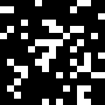

Conway's Game of Life in One Pixel Shader
Got my little hacky WebGL framework working and wrote a Game of Life shader. It uses previous frame as a source to compute current one. You can hack on the shader yourself by clicking a "PS" (Pixel Shader) button. To start try adjusting the cell variable - it controls the field scale, fstep variable is a frame divider - use it to slow down the processing.

Click to show WebGL demo
Click to show WebGL demo